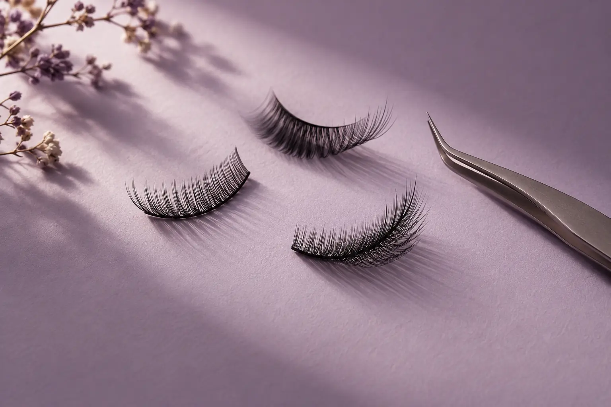
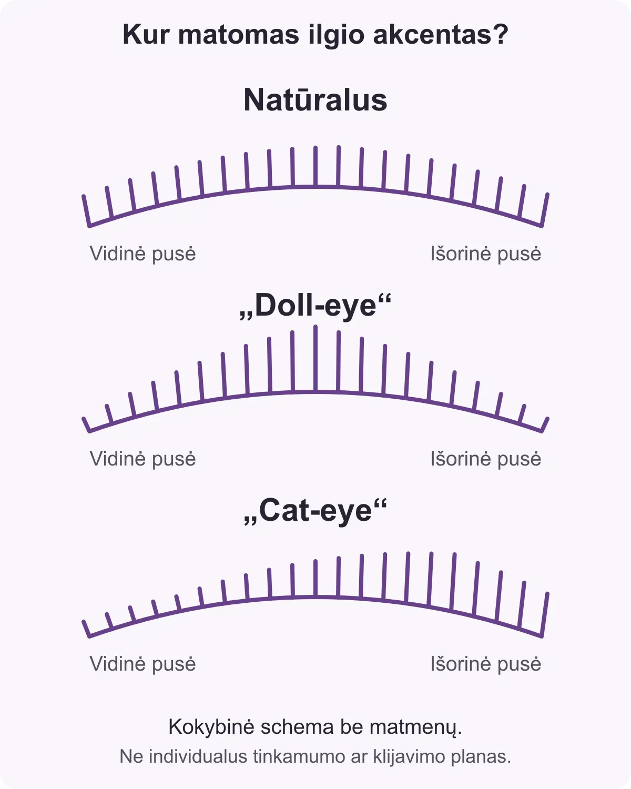

Natūralus, „cat-eye“ ir „doll-eye“ blakstienų efektas: kuo skiriasi jų išdėstymas?
Autorius: Madbeauty redakcija · 2026 m. gruodžio 29 d. 16:00 Lietuvos laiku
Palyginkite tris blakstienų efektus pagal ilgių pasiskirstymą ir akcento vietą. Sužinokite, kaip apibūdinti norimą vaizdą ir ką dar patikslinti paslaugos apraše.

Šie efektai daugiausia skiriasi tuo, kur paskirstomas ilgesnių blakstienų akcentas: natūralus išdėstymas švelniau seka augimo kontūrą, „doll-eye“ akcentuoja centrą, o „cat-eye“ — išorinę akies pusę. Tai kokybiniai išdėstymo pavyzdžiai, o ne konkretūs ilgio matmenys ar rekomendacija, tinkanti kiekvienam.
Trys ilgio išdėstymo kryptys
- Natūralus: švelniai kintantis išdėstymas, sekantis natūraliu blakstienų augimo kontūru.
- „Doll-eye“: trumpesni plaukeliai kampuose, ilgiausio įspūdžio akcentas centre, vėl trumpesni ties kitu kampu.
- „Cat-eye“: ilgio akcentas paslinktas į išorinę akies pusę.
Šių pavadinimų paaiškinimas remiasi London Lash blakstienų ilgių išdėstymo aprašu. Jame taip pat nurodoma, kad panašus išdėstymas gali būti skirtingo tankio, o stiliaus pavadinimas neapibrėžia visų naudojamų priemonių ar individualaus tinkamumo.

Palyginkite norimą vaizdą, ne vien pavadinimą
Norėdami aiškiau nusakyti lūkestį, pirmiausia įvardykite, kur norite matyti pagrindinį akcentą: centre, arčiau išorinės pusės, ar švelniai pagal natūralų kontūrą. Jei turite patinkančio vaizdo nuotrauką, parodykite, kuri jos detalė jums svarbi. Nuotrauka padeda paaiškinti pageidavimą, bet negarantuoja tokio paties rezultato.
- Patikslinkite, ar renkatės blakstienų priauginimą, laminavimą ar dažymą. Tai skirtingos paslaugos, o efekto pavadinimas pats savaime nepasako, kas įeina į konkretų pasiūlymą.
- Paklauskite, kaip paslaugos apraše suprantamas pasirinktas išdėstymas ir ar gali skirtis jo tankis ar apimtis.
- Prieš patvirtindami vizitą sutikrinkite paslaugos sudėtį ir pasirinkto efekto aprašymą. Vienodos etiketės nebūtinai reiškia vienodą pasiūlymą.
Nuo nacionalinio aprašo iki miesto pasirinkimo
Madbeauty nacionaliniame blakstienų priauginimo apraše pateikiama bendra paslaugos kategorija. Ji pati nepatvirtina konkretaus miesto teikėjo, kainos, laisvo laiko ar registracijos. Jei ieškote vietinio pasiūlymo, miestą pasirinkite atskirai, o tada tikrinkite konkretaus rodomo rezultato informaciją. Jei rezultatų nėra, nacionalinė kategorija jų nesukuria.
Jei dar sprendžiate, kuo skiriasi pačios blakstienų paslaugos, daugiau konteksto rasite platesniame „Madbeauty“ blakstienų paslaugų gide.
Susiję gidai
Šaltiniai
- London Lash · blakstienų ilgio išdėstymo stiliai · londonlash.com